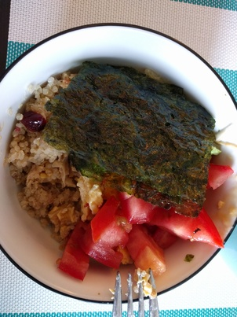

Quinoa with Cranberries

Amazing dish with a ton of protein. We have three layers:
Ingredients:
- Bottom - Quinoa, Dried Cranberries
- Middle - Sesame oil, Onions, Chicken, Broccoli, Eggs, Soy Sauce, Rice Vinegar, Yamaimo (Japanese mountain yam)
- Top - Tomatoes, Seaweed
How to make it:
- Bottom
Cook the quinoa with the cranberries. You can add them from the start or later on. Use whatever method you prefer to cook it - pot or instant pot.
- Middle
On a skillet, Saute with sesame oil and add chopped onions until they are golden. Add small chicken slices until it’s cooked. Add broccoli, a few eggs, 1 tbs of soy sauce and rice vinegar. Turn the hit off and grad the yamaimo on top of everything.
- Top
Serve everything: quinoa at the bottom, the content of the skillet above it, and add tomatoes and seaweed on the top.
Note: You can also use the following as replacements or additions: rice, shrimp, mushrooms, bell pepper, squash, and feta cheese.